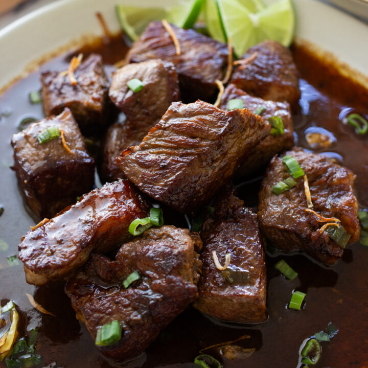
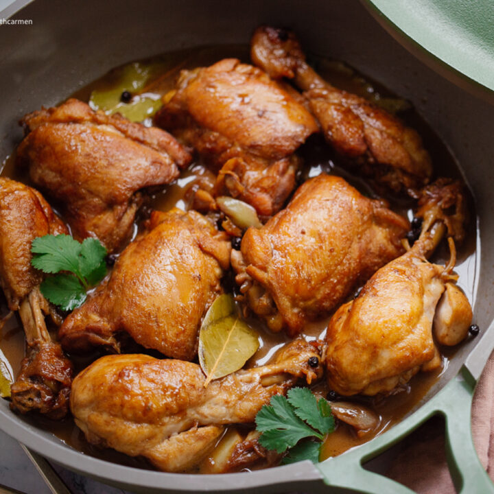
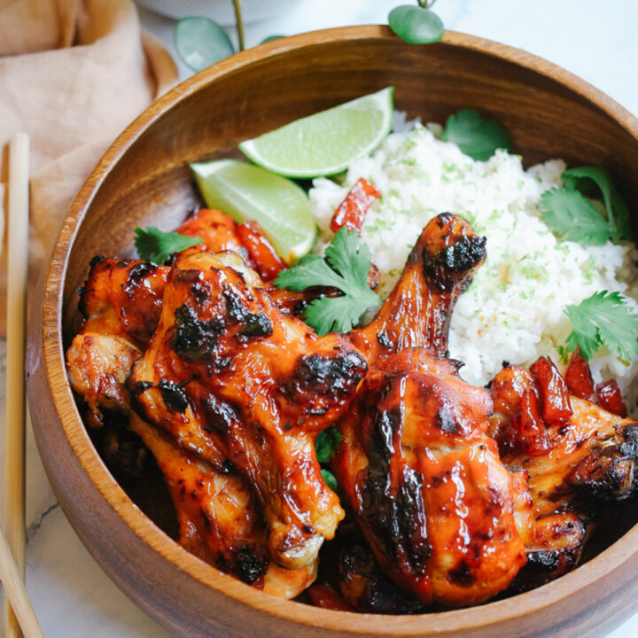

This quick and delicious Garlic Beef Salpicao is perfect for a crowd and bursting with flavor! Tender beef cubes are stir-fried in garlic and soy sauce, creating an irresistible dish that’s great for any dinner party.
This easy recipe features tender chicken simmered in a tangy soy and vinegar sauce, making it a delicious option for any meal. It's perfect for busy nights and brings that classic, comforting taste of the Philippines straight to your table. Try this healthy, crowd-pleasing recipe today!.
Crispy and golden, these Filipino-Style Chicken Lumpia are a delicious treat for any occasion! Easy to make ahead, these spring rolls are packed with flavorful chicken and vegetables, perfect for serving a crowd or enjoying as a snack. Fry them up for a delicious and popular appetizer that everyone will love. Check out the recipe for these fun and simple spring rolls!.
The sweet, sticky marinade makes them a delicious addition to any dinner menu, perfect for serving a crowd or meal prepping ahead of time. Pair these juicy chicken legs with potatoes or vegetables for a healthy, flavorful dinner. Try this simple recipe for a fun twist on classic BBQ chicken!.
This hearty dish is packed with tender chicken, vegetables, and a flavorful tomato-based sauce, perfect for serving a crowd or meal prepping ahead. Serve it with rice for a comforting and complete meal.